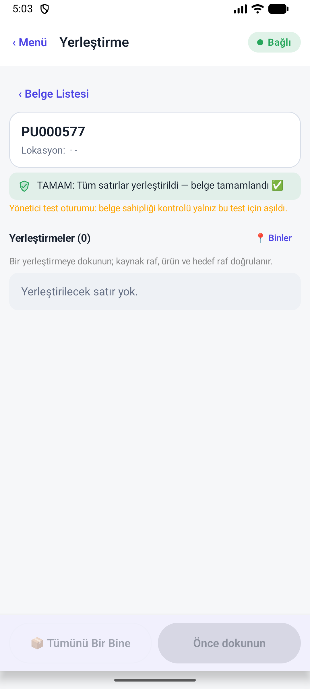
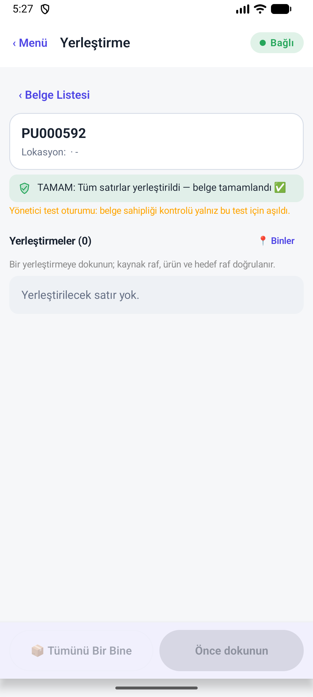
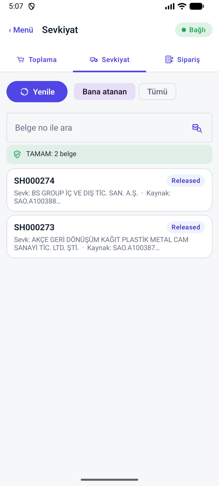
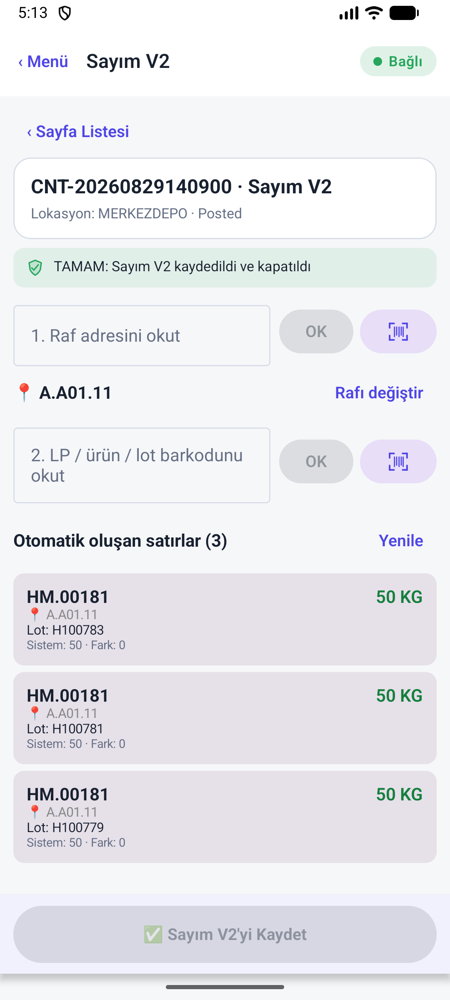

Mal kabul, yerleştirme, sevkiyat ve sayım — gerçek sandbox sonucu
Bu belge yalnız birim test sonucunu değil, 29.08.2026 tarihinde BADE terminalinden basılan gerçek operasyon düğmelerini ve Business Central geri okumalarını gösterir. Kod değiştirilmedi, tenant'a uzantı yüklenmedi ve generic EMU kullanılmadı.
1. Yönetici özeti
Sonuçlar “okudu”, “satırı hazırladı” ve “BC'de post/register oldu” olarak ayrı sınıflandırıldı.
Gerçekten geçti
- Tek LP yerleştirme: PU000577.
- 10 LP toplu yerleştirme: PU000592.
- Toplama + sevkiyat: PI001137 + SH000277.
- Sayım V2: CNT-20260829140900, Posted.
- BADE unit: 151/151.
Gerçekten hata verdi
- PUO.A100618 kısmi doğrudan kabul.
- LP000049 ile Sayım V2 LP okutması.
postingTestsAPI çağrısı.- Test Merkezi HTTP 200 döndü fakat test run yok.
Neden canlıya hazır değil?
- BADE ile sandbox AL paketi aynı endpoint seviyesinde değil.
- Yeni ambar kabulü BADE'den oluşturulamıyor.
- Tek doğrudan PO'nun başlık/satır lokasyonu çelişkili.
- LP'li ve çok LP'li mal kabul gerçek postu koşturulamadı.
2. Çalışma ortamı ve test disiplini
| Kontrol | Sonuç | Kanıt / not | Durum |
|---|---|---|---|
| APK | com.dynops.bcwms.bade | Her UI XML package alanı BADE; com.dynops.bcwms.emu force-stop edildi. | PASS · BADE ONLY |
| Ortam | E-DefterSandbox | BADE ana menü bağlantı göstergesi “Bağlı — canlı bağlantı”. | PASS |
| Şirket | BS GROUP ÜRETİM VE KİMYA SAN. TİC. A.Ş. | BADE şirket başlığı ve operasyon listeleri. | PASS |
| BADE unit | 28 suite, 151 test, 0 failure, 0 error, 0 skipped | :app:testBadeDebugUnitTest BUILD SUCCESSFUL; JUnit XML toplamı 151/151. | PASS |
| Kod değişikliği | Yapılmadı | Bu tur yalnız terminal, kaynak inceleme ve raporlama yaptı. | BİLGİ |
| AL publish | Yapılmadı | Sandbox tenant uzantısı değiştirilmedi. | BİLGİ |
3. Mal kabul — yapılanlar ve yapılamayanlar
100 satın alma siparişi ekrandan tarandı; yalnız açık miktarlı, küçük ve güvenli belgeler seçildi.
| Senaryo | Yapılan | Gerçek sonuç | Durum | Kanıt |
|---|---|---|---|---|
| Ambar kabul listesi | “Bana atanan” ve “Tümü” filtreleri açıldı. | Yalnız RE000634 var; PUO.A100651 kaynaklı, %100 tamamlanmış, açık miktar 0. Yeni post için kullanılamaz. | BLOKE | BADE UI geri okuması. |
| LP'siz kısmi kabul | PUO.A100618, DF.0000520, 15 ADET içinden 5 ADET hazırlandı ve post onaylandı. | HTTP 400, REF-79ECD596. BC: Location Code must be equal to '' ... Current value is 'MERKEZDEPO'. Post oluşmadı. | FAIL | UI XML |
| LP'siz tam kabul | Aynı belgenin 15 ADET tam miktarı incelendi. | Kısmi postu durduran başlık boş / satır MERKEZDEPO çelişkisi tam postu da aynı noktada durdurur; ikinci kez mutasyon yapılmadı. | AYNI P0 İLE BLOKE | BC hata mesajı + kaynak inceleme. |
| Tek LP kabul | RE000634 üzerindeki LP Başlat/Tara akışı incelendi. | Açık miktar 0; kullanılabilir yeni Warehouse Receipt yok. Ayrıca sandbox'ta licensePlates entity set'i 404. | BLOKE | UI + BCWMS.ApiError logu. |
| Çok LP / palet dağıtımı | Toplu LP Dağıtımı düğmesi ve kaynak kodu doğrulandı. | Dağıtılacak açık Warehouse Receipt satırı olmadığı için gerçek receipt postu başlatılamadı. | BLOKE | RE000634 açık miktar 0. |
| Yeni Warehouse Receipt | BADE butonları, standart yayınlar ve web istemcisi yolu araştırıldı. | BADE purchaseSources ekranında “ambar kabulü oluştur” action'ı yok. Bu çalışma ortamında oturumlu BC tarayıcısı da yok. | ÜRÜN EKSİĞİ | ReceivingModule + WebServicePublisher incelemesi. |
4. Yerleştirme — tek LP ve çok LP gerçek register
| Belge | Senaryo | Adımlar | Geri okuma | Durum |
|---|---|---|---|---|
| PU000577 | Tek LP · 50 KG | LP000049 → kaynak K.K03.11 → ürün HM.00181 → hedef A.A01.11 → miktar 50 → Yerleştirmeyi Kaydet. | “Tüm satırlar yerleştirildi — belge tamamlandı”; satır 1'den 0'a indi. | PASS · REGISTER |
| PU000592 | 10 LP · toplam 1.000 KG | Y.G02.23 hedef rafı; LP000068–LP000077 toplu okutuldu; ekran 10/10 LP hazır gösterdi; toplu yerleştirme çalıştırıldı. | “Tüm satırlar yerleştirildi — belge tamamlandı”; açık yerleştirme listesi 6'dan 5'e indi ve PU000592 kayboldu. | PASS · 10 LP |
5. Toplama ve sevkiyat — gerçek post
| Belge | Yapılan | Geri okuma | Durum |
|---|---|---|---|
| PI001137 | H.A01.11, HM.00313, lot H100792, 30 KG; satır onayı ve “Toplamayı Kaydet”. | Açık pick header/satırları register sonrası 404/0 satır; SH000277 sevk miktarı 0'dan 30'a çıktı. | PASS · REGISTER |
| SH000277 | Released shipment, 30 KG; “Sevkiyatı Kaydet”. | Sevkiyat listesi 3 belgeden 2'ye indi; SH000277 listeden düştü. | PASS · POST |
6. Sayım — yeni belge, idempotent ürün okutma ve gerçek post
| Senaryo | Yapılan | Gerçek sonuç | Durum |
|---|---|---|---|
| Yeni Sayım V2 | MERKEZDEPO için CNT-20260829140900 oluşturuldu. | Belge Open → In Progress oldu; A.A01.11 aktif raf. | PASS |
| Ürün + çok lot | HM.00181 okutuldu. | H100783, H100781, H100779 lotları için 3 × 50 KG; sistem farkı 0. | PASS |
| Tekrar okutma | HM.00181 ikinci kez okutuldu. | “Bu rafta zaten sayıldı”; satır sayısı 3 kaldı, duplicate oluşmadı. | PASS · İDEMPOTENT |
| Sayım post | “Sayım V2'yi Kaydet” → 3 QR satırı onayı. | CNT-20260829140900 durumu Posted; “kaydedildi ve kapatıldı”. | PASS · POST |
| LP okutma | A.A01.11 üzerinde LP000049 okutuldu. | “LP000049 LP numarası bulunamadı.” Sandbox metadata/loglarında licensePlates entity set'i 404. | FAIL · API UYUMU |
7. İstenen senaryo matrisi — son durum
| Alan | Senaryo | Sonuç | Eksik / hata |
|---|---|---|---|
| Mal kabul | LP'siz kısmi | FAIL | PUO.A100618 mixed location. |
| Mal kabul | LP'siz tam | BLOKE | Aynı mixed-location P0. |
| Mal kabul | Tek LP | BLOKE | Açık Warehouse Receipt yok; licensePlates 404. |
| Mal kabul | Çok LP | BLOKE | Yeni Warehouse Receipt oluşturma action'ı yok. |
| Yerleştirme | Tek LP | PASS | PU000577 / LP000049 / 50 KG. |
| Yerleştirme | 10 LP | PASS | PU000592 / LP000068–077 / 1.000 KG. |
| Sevkiyat | Toplama + tek satır sevk | PASS | PI001137 + SH000277 / 30 KG. |
| Sayım | Ürün + 3 lot + tekrar okutma + post | PASS | CNT-20260829140900 Posted. |
| Sayım | LP ile sayım | FAIL | LP entity set sandbox'ta 404. |
8. BC'ye hangi verinin gitmesi gerekiyor? Kod doğrulaması
BC tablolarına doğrudan erişim olmadan, posting codeunit zinciri ve LP subscriber'ları kaynakta doğrulandı. Canlı read-back yapılmayan alanlar PASS sayılmadı.
| Akış | BC posting mekanizması | Beklenen BC hedefleri | LP taşıma | Doğrulama |
|---|---|---|---|---|
| Mal kabul | Whse.-Post Receipt | Posted Whse. Receipt Header/Line, Purch. Rcpt. Line, Item Ledger Entry, Value Entry, Warehouse Entry. | Receipt line/header LP → posted receipt → ILE/Value/Warehouse Entry; kaynakta reconcile/backfill var. | KODDA VAR · canlı receipt post yok |
| Yerleştirme | Whse.-Activity-Register | Registered Whse. Activity Header/Line ve Warehouse Entry. | Warehouse Journal Line → OnBeforeInsertWhseEntry → Warehouse Entry LP. | REGISTER GERÇEK · tablo alan read-back yok |
| Toplama | Whse.-Activity-Register | Registered Whse. Activity ve Warehouse Entry. | Pick/Shipment source satırlarından LP çözümleme ve Warehouse Entry stamping. | REGISTER GERÇEK |
| Sevkiyat | Whse.-Post Shipment | Posted Whse. Shipment, Sales Shipment Line, Item Ledger Entry, Value Entry, Warehouse Entry. | Posted Shipment Line/Header → ILE/Value/Sales Shipment LP reconcile. | POST GERÇEK · LP'siz belge |
| Sayım | Item Jnl.-Post Batch, Physical Inventory | Item Ledger Entry, Value Entry; bin zorunlu lokasyonda Warehouse Entry. | Count Line LP → Item Journal Line → ILE/Value; Warehouse Journal Line → Warehouse Entry. | POST GERÇEK · ürün/lot; LP route fail |
9. Sandbox paket uyumsuzluğu ve gönderilen compiler çıktısı
| Bulgu | Mevcut durum | Etkisi | Durum |
|---|---|---|---|
licensePlates | Sandbox API çağrısı HTTP 404. | LP ile sayım ve LP merkezli ekranlar güvenilir çalışmıyor. | P0 |
localUsers | Sandbox API çağrıları HTTP 404; yönetici test oturumu fallback'i kullanılıyor. | Gerçek operatör sahipliği/kimliği doğrulanamıyor. | P0 |
postingTests | HTTP 404; Test Merkezi HTTP 200 fakat test run yok. | AL posting smoke suite terminalden koşturulamıyor. | P0 |
| AL0729 / PageType | Gönderilen eski çıktıda RoleCenter için Promoted property uyarıları vardı. Güncel kaynakta PageType = RoleCenter var, geçersiz Promoted* property kalmadı. | Gelecek AL sürümünde error olacak uyarı kaynakta temiz. | STATİK TEMİZ |
| AL0118 | Gönderilen eski çıktıda Warehouse Entry Item Ledger Entry No. alanı yoktu. Güncel kaynakta bu erişim yok; yalnız Value Entry'nin standart alanı kullanılıyor. | Eski compiler error kaynakta kaldırılmış. | STATİK TEMİZ |
| Güncel AL compile | Bu turda Windows AL toolchain çalıştırılmadı. | Statik temizliğe rağmen compile/publish kanıtı hâlâ gerekli. | BEKLİYOR |
10. Çözüm sırası — sonraki çalışma
- Sandbox AL sürümünü eşitle: Güncel kaynak Windows'ta 0 error ile compile edilmeli; E-DefterSandbox'a kontrollü publish sonrası metadata'da
localUsers,licensePlates,postingTestsgörünmeli. - Mal kabul belge üretimini tamamla: BADE'ye
purchaseSources(...)/createWarehouseReceiptbenzeri atomik action eklenmeli veya standart “Kaynak Belgeleri Al” süreci erişilebilir yapılmalı. - PUO.A100618 verisini düzelt: Purchase Header lokasyonu ile Purchase Line lokasyonu aynı olmalı. Başlık boş/satır MERKEZDEPO kombinasyonu doğrudan post kapısında reddedilmeli; kullanıcı post aşamasına kadar ilerlememeli.
- Dört taze receipt fixture oluştur: LP'siz 4/10 + 6/10 kısmi/tam; tek LP 10/10; 3 LP dağılımı; çok LP + farklı lot/SKT.
- Her receipt sonrası BC read-back: Posted Whse Receipt, Purch. Rcpt., Reservation/Tracking, Item Ledger, Value Entry ve Warehouse Entry belge/satır/LP bazında okunmalı.
- LP sayımı tekrar et: Yayın sonrası yeni LP oluştur, yerleştir, aynı rafta Count V2 ile okut, duplicate/idempotency ve Posted ledger LP alanlarını doğrula.
- Go kapısı: Mal kabul matrisi tamamı PASS ve üç endpoint 200 olmadan canlıya çıkma.
11. Görsel ve makine-okunur kanıtlar
{kind=link}

PU000577 · LP000049 · tek LP yerleştirme tamamlandı
{kind=link}

PU000592 · LP000068–077 · 10 LP toplu yerleştirme tamamlandı
{kind=link}

SH000277 listeden düştü · açık shipment 3 → 2
{kind=link}

CNT-20260829140900 · 3 lot · fark 0 · Posted
PASS XML
FAIL / liste XML
12. Son cümle
Rapor zamanı: 29.08.2026 · Europe/Istanbul. Bu rapor turunda kod, tenant uzantısı ve production ortamı değiştirilmedi.